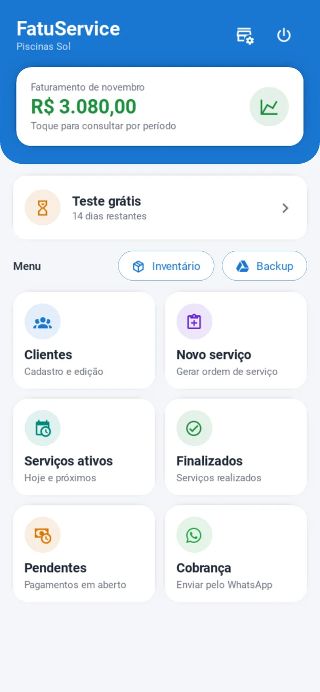

O celular vai mostrar um aviso. É normal.
O FatuService ainda não está na Play Store, então o Android avisa que o app vem "de fora da loja". Ele não lê suas fotos, contatos nem mensagens: guarda seus dados no próprio celular e, se você quiser, faz backup só na pasta dele no seu Google Drive.
Passo a passo
- Toque em "Baixar o aplicativo" Se o navegador perguntar se quer mesmo baixar o arquivo, toque em Baixar mesmo assim.
- Abra o arquivo baixado Toque na notificação do download ou abra o FatuService.apk na pasta Downloads.
- Permita a instalação Se aparecer "Por segurança, seu telefone não pode instalar apps desta fonte", toque em Configurações, ative Permitir desta fonte e volte.
- Toque em Instalar Se aparecer o aviso do Play Protect ("App não seguro bloqueado" ou "Desenvolvedor desconhecido"), toque em Mais detalhes e depois em Instalar mesmo assim. Se ele oferecer enviar o app para análise, pode aceitar.
- Abra e comece a usar Cadastre sua empresa e entre com sua conta Google. Os 14 dias grátis começam na hora, sem cartão de crédito.

Dúvidas
Já tenho o app. Como atualizo?
Faça um backup pelo app, baixe o arquivo de novo por esta página e instale por cima, sem desinstalar. Seus dados continuam lá.
O app é seguro?
Sim. Todo APK é assinado sempre com a mesma chave do FatuService, e o Android só aceita atualizações com essa assinatura. Veja a política de privacidade para saber exatamente quais dados são usados.
Funciona no iPhone?
Ainda não. Por enquanto só Android.
Precisa de ajuda?
Escreva para robsonluissagaz@gmail.com.